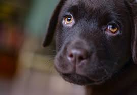

La vida de kayon

Kayon nació en un pequeño criadero de perros de raza mixta en las afueras de un pintoresco pueblo. Desde el principio, su personalidad destacó entre sus hermanos peludos. Con un pelaje suave y ojos expresivos, cautivó el corazón de todos los que lo conocieron.
Desde cachorro, Kayon demostró una inteligencia excepcional y una curiosidad insaciable. Su dueño, un amante de los animales, notó rápidamente su capacidad para aprender trucos y comandos con facilidad. Pronto, Kayon se convirtió en la estrella del vecindario, deleitando a niños y adultos por igual con sus acrobacias y su encantadora personalidad. A medida que crecía, Kayon se convirtió en un incansable compañero de aventuras. Le encantaba explorar los bosques cercanos, correr por campos abiertos y chapotear en riachuelos cristalinos. Su espíritu libre y su energía inagotable lo convirtieron en el compañero perfecto para actividades al aire libre.
Con el tiempo, Kayon no solo se destacó por su agilidad y destreza, sino también por su naturaleza compasiva. Instintivamente, buscaba consolar a quienes lo rodeaban en momentos de tristeza o angustia. Se convirtió en un verdadero amigo, brindando apoyo incondicional a su dueño y a cualquiera que necesitara un amigo leal.
A medida que los años pasaban, Kayon envejeció con gracia, manteniendo su vitalidad y amor por la vida. Se convirtió en un símbolo de lealtad y afecto, dejando una huella imborrable en la comunidad. Su legado perdura en las historias contadas por aquellos que tuvieron el privilegio de conocer al perro extraordinario llamado Kayon, un fiel compañero que iluminó cada rincón de sus vidas con su amor incondicional.